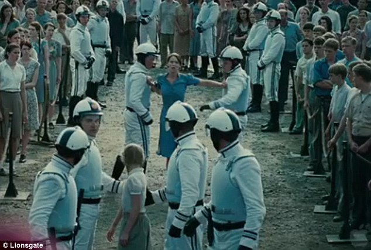

-
Sinopsis de la película
-
Localizaciones del Rodaje
-
Distrito 12
-
Henry River Mill Village - Hickory, Carolina del Norte: es el famoso pueblo fantasma que se uso como distrito 12, destacando el hogar de Katniss Everdeen y la panadería de Peeta. Las casas están abandonadas y descuidadas, son propiedades privadas pero se pueden ver desde afuera.
-
Shelby - Carolina del Norte: es el pueblo en donde se filmaron las escenas de la cosecha de tributos.Los edificios de la calle South Morgan fueron transformados para asemejarse a las industriales construcciones del distrito 12.
-
Bosque del Distrito 12
-
Bosque Nacional Pisgah - Carolina del Norte: es el bosque en donde Katniss y Gale cazan y conversan acerca de la pronta cosecha de tributos.
-
Parque Big Ivy Historical, Barnardsville, Carolina del Norte: es otra zona boscosa que se utilizó para representar los bosques cercanos al Distrito 12.
-
Centro de Entrenamiento y el Capitolio
-
Antigua planta de cigarrillos Philip Morris - Concord, condado Carrabus, Carolina del Norte: esta vieja fábrica se transformó en el centro de entrenamiento de los tributos, donde se grabó la una la escena donde Katniss dispara una fleja a la manzana que tenía un cerdo y que provoca que los examinadores queden en shock. Sirvió como lugar para guardar el vestuario y decoraciones.
-
Cabarrus Arena and Convention Center - Concord, Carolina del Norte: es donde los tributos hacen su entrada llevados por carruajes durante la ceremonia de presentación. En este lugar Katniss y Peeta vestían sus famosos trajes con llamas.
-
Knight Theater - Charlotte, Carolina del Norte: Es donde los tributos son entrevistados uno por uno antes de los juegos por Caesar Flickerman, mientras tiene como espectador en vivo a los habitantes del capitolio.
-
Los 74ºJuegos del Hambre, la Arena
-
North Fork Reservoir - Black Mountain, Carolina del Norte: esta vieja fábrica se transformó en el centro de entrenamiento de los tributos, donde se grabó la una la escena donde Katniss dispara una fleja a la manzana que tenía un cerdo y que provoca que los examinadores queden en shock. Sirvió como lugar para guardar el vestuario y decoraciones.
-
Bosque Estatal DuPont - Cedar Mountain, Carolina del Norte:
Este bosque y sus diferentes zonas sirvieron como área principal de grabación de los Juegos.
Algunas zonas son:
-
Cataratas del Velo de Novia: donde Katniss se calma luego de escapar de la tormenta de fuego.Y tiene un encuentro con los tributos de los Distritos 1 y 2.
-
Triple Falls: lugar donde Katniss se encuentra a Peeta, quien estaba herido y camuflado entre las rocas.
-
Detalles sobre la Produccion
-
Director: Garry Ross
-
Guiotistas: Garry Ross, Suzanne Collis y Billy Ray.
-
Basado en: las novelas de Suzanne Collis con el mismo nombre.
-
Producción: Jon Kilik y Nina Jasobson
-
Música: James Howard y T-Bone Burnett.
-
Fotografía: Tom Stern.
-
Vestuario: Judianna Makovsky.
Suzanne Collins, autora de las novelas. Garry Ross, Director y Guionista. Billy Ray, Guionista. -
-
Katniss Sings - 'The Hanging Tree'
En un porvenir distópico, el nación de Panem emerge de las ruinas de lo que en un momento fue América del Norte. El país se encuentra dividido en 12 distritos bajo el control del Capitolio, un corrupto y tirano régimen. Como retribución a una antigua insurrección, el Capitolio organiza anualmente un programa de televisión llamado Los Juegos del Hambre, donde un chico y una chica de cada distrito son elegidos por sorteo para combatir hasta el final en una arena, hasta que solo uno siga siendo el único. Katniss Everdeen, una chica de 16 años perteneciente al pobre Distrito 12, se ofrece como tributo voluntaria para ocupar el puesto de su hermana pequeña, Prim, cuando ésta es elegida. Katniss y Peeta Mellark, otro tributo del distrito, deben lidiar no solo con los retos atroces de los Juegos, sino también con el entretenimiento televisivo y las manipulaciones políticas del Capitolio. A medida que batalla por subsistir, Katniss se transforma sin darme cuenta en un emblema de esperanza y rebelión para los esclavizados habitantes de Panem.
